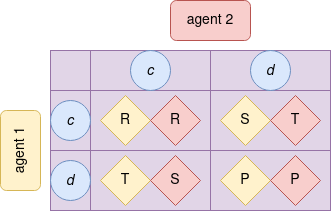

In this section, we introduce the proofs to several claims made in our paper. First, we prove the equivalence between weights-DDRL and asymmetric RL in a multi-armed bandit task, in the limit of an infinitely small discretization \(\sigma\). Second, we show that optimism can shift the separatrix in a stag-hunt game, but not in a prisoner’s dilemma.
Equivalence between weights-DDRL and asymmetric RL in a two-armed bandit task
We consider a multi-armed bandit with arms \(a_i\), \(i \in N\); for each \(i\), \(a_i\) yields a reward, \(+1\), with probability \(p_i\), and a punishment, \(-1\), with probability \(1-p_i\).
An asymmetric RL agent is equipped with two different learning rates: \(\alpha^{+}\) updates positive prediction errors, and \(\alpha^{-}\) updates negative prediction errors. The agent’s bias strength, \(b\), is defined as the learning-rate ratio: \(b = \frac{\alpha^{+}}{\alpha^{-}}\). Cazé and van der Meer (2013) have shown that, for such an agent, the Q-value at steady state for arm \(a_{i}\) can be expressed as follows:
Let us consider a weights-DDRL agent with number of neurons \(n\), discretization sigma \(\sigma\), discretization grid \({x_j, j \in [1, n]}\) with width \(\Delta x\), and weight vector \(\boldsymbol{w}\) with elements \(w_j\), \(j \in [1, n]\). For each arm \(a_i\), this agent computes a Q-value distribution \(Q^{a_i, v}\), which quantifies the probability that the Q-value of arm \(a_i\) equals a value \(v\). Since the two-armed bandit is a stateless environment, the Q-value distribution \(Q^{a_i, v}\) equals the reward distribution \(R^{a_i, r}\), which quantifies the probability that arm \(a_{i}\) yields a reward \(r\).
Therefore, in the limit of an infinitely small discretization sigma \(\sigma \rightarrow 0\), the Q-value distribution for arm \(a_i\) can be described as follows:
$ Q^{a_i, v} = p_i $ when \(v = 1\)
$ Q^{a_i, v} = 1 - p_i $ when \(v = -1\)
$ Q^{a_i, v} = 0 $ for all other values of \(v\).
This is assuming that the agent is neutral – that is, all elements \(w_j\) of vector \(\boldsymbol{w}\) have value \(1\). Now, let us consider an optimistic/pessimistic agent. For such an agent, \(w_j = 1\) if \(x_j < \bar Q^{a_i, v}\), and \(w_j = w_U\) if \(x_j \geq \bar Q^{a_i, v}\), where \(\bar Q^{a_i, v}\) denotes the mean of the Q-value distribution.
The mean of the Q-value distribution is \(\bar Q^{a_i, v} = 2p_i - 1\), hence \(\bar Q^{a_i, v} \in [-1, 1]\). Excluding the extreme case in which there is an \(i\), such that \(p_i = 1\), we can formulate the weighted Q-value distribution \(\tilde Q^{a_i, v}\):
$Q^{a_i, v} = w_U p_i $ when \(v = 1\)
$Q^{a_i, v} = 1 - p_i $ when \(v = -1\)
$Q^{a_i, v} = 0 $ for all other values of \(v\).
We then normalize this distribution so that \(\int_{x_1 - \frac{\Delta x}{2}}^{x_n+\frac{\Delta x}{2}}\tilde Q^{a_i, v} dv = 1\). To do this, we divide the distribution by its integral, hence:
$Q^{a_i, v} = $ when \(v = 1\)
$Q^{a_i, v} = $ when \(v = -1\)
$Q^{a_i, v} = 0 $ for all other values of \(v\).
The mean of this new distribution is: \[\begin{equation}
\overset{\simeq} Q^{a_i, v} = \frac{w_U p_i}{w_U p_i + (1-p_i)} - \frac{1 - p_i}{w_U p_i + (1-p_i)} \\
= \frac{w_U p_i - (1 - p_i)}{w_U p_i + (1-p_i)}
\end{equation}\]
Thus, on a multi-armed bandit task, an asymmetric-RL agent with bias strength \(b\) learns the same Q-values at steady state as a weights-DDRL agent with upper weight value \(w_U = b\).
Effect of optimism on social dilemmas
We consider the following social dilemma, in which two agents can cooperate (\(c\)) or defect (\(d\)).

social_dilemma.drawio.png
Mutual cooperation yields a “reward” \(R\) for both agents, while mutual defection yields a “punishment” \(P\). If one agent cooperates and the other defects, the cooperator gets a “sucker” payoff \(S\), while the defector gets a “temptation” payoff \(T\). The stag-hunt game and the prisoner’s dilemma differ in their reward structure:
In a stag-hunt game, \(R>T>P>S\);
In a prisoner’s dilemma, \(T>R>P>S\).
We want to find the conditions under which the Q-value of cooperation for agent \(i\), \(Q^{i,c}\), is greater than the Q-value for defection for agent \(i\), \(Q^{i,d}\). To do this, we consider a weights-DDRL agent with number of neurons \(n\), discretization sigma \(\sigma\), discretization grid \({x_j, j \in [1, n]}\) with width \(\Delta x\), and weight vector \(\boldsymbol{w}\) with elements \(w_j\), \(j \in [1, n]\). Moreover, we place ourselves in the limit of an infinitely small discretization sigma, \(\sigma \rightarrow 0\), and we assume the agent’s discount factor \(\gamma\) is \(0\). As a consequence, the Q-value distributions \(Q^{i,c,v}\) and \(Q^{i,d,v}\) just depend on the payoff and on the other agent \(j\)’s strategy \(X^{j,c}\).
\(Q^{i,c,v} = R\) with probability \(X^{j,c}\);
\(Q^{i,c,v} = S\) with probability \(1 - X^{j,c}\);
\(Q^{i,d,v} = P\) with probability \(X^{j,d} = 1 - X^{j,c}\);
\(Q^{i,d,v} = T\) with probability \(1 - X^{j,d} = X^{j,c}\).
The mean Q-value \(\bar Q^{i,c,v}\) is therefore \(X^{j,c} \cdot R + (1 - X^{j,c}) \cdot S = S + X^{j,c} (R - S)\). We consider \(X^{j,c} \in ]0,1[\). In both social dilemmas, \(R > S\), from which it follows that \(S < \bar Q^{i,c,v} < R\). As a consequence, the biased and normalized distribution \(\tilde Q^{i,c,v}\) is described by:
\(Q^{i,c,v} = R\) with probability \(\frac{w_U \cdot X^{j,c}}{w_U \cdot X^{j,c} + (1 - X^{j,c})}\);
\(Q^{i,c,v} = S\) with probability \(\frac{1 - X^{j,c}}{w_U \cdot X^{j,c} + (1 - X^{j,c})}\).
A similar reasoning can be applied to the Q-value distribution \(Q^{i,d,v}\), and we obtain:
\(Q^{i,d,v} = P\) with probability \(\frac{1 - X^{j,c}}{w_U \cdot X^{j,c} + (1 - X^{j,c})}\);
\(Q^{i,d,v} = T\) with probability \(\frac{w_U \cdot X^{j,c}}{w_U \cdot X^{j,c} + (1 - X^{j,c})}\).
Consequently, the means of these biased distributions are:
In both social dilemmas, \(P > S\) so \(S-P < 0\). Therefore, \((S-P)[1 - X^{j,c}] < 0\).
In a prisoner’s dilemma, \(T > R\), so \(R-T < 0\), and as a consequence, \(X^{j,c} \cdot [w_U (R-T)] < 0\). Therefore, in a prisoner’s dilemma, it is not possible to have \(\overset{\simeq} Q^{i,c,v} \geq \overset{\simeq} Q^{i,c,d}\). In other terms, the agents always mutually defect.
In a stag-hunt game, however, \(R > T\), so \(R-T > 0\), and as a consequence, \(X^{j,c} \cdot [w_U (R-T)] > 0\). So we have \(\overset{\simeq} Q^{i,c,v} \geq \overset{\simeq} Q^{i,c,d}\)